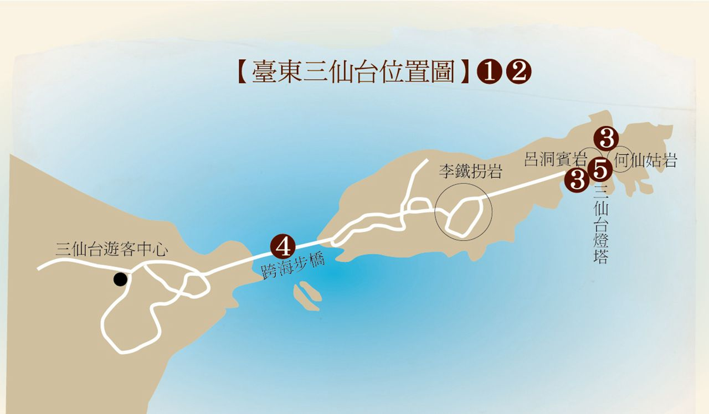

台東成功三仙台 |
| 首頁 簡介 相簿 地圖 影片 |
景觀價值三仙台是臺灣地區具有代表性的宗教自然景觀之一，除了是研究海岸植物生態的重要據點外，同時也具有豐富的宗教敘事與想像。因特殊海蝕地形樣貌，而分別被原住民阿美族與漢人賦予宗教傳說故事的過程，既反映了神話常見的起源與表現方式，也具體呈現不同社群的信仰或信念，受其各自歷史文化脈絡影響而呈現的差異。三仙到此一遊的故事，則顯示華人傳統道教文化與八仙過海傳說，在臺灣地區的廣泛傳播與深植人心。 歷史沿革三仙台位於臺東縣成功鎮東北方，面積約22公頃，最高點海拔約77公尺，屬於火山噴發產生的都巒山集塊岩，原是岬角，因海水侵蝕逐漸蝕斷岬角頸部，而成了離岸島。此處地形以三塊巨大岩石最為顯眼，地名原稱「釣魚台」，後來因相傳八仙之中的李鐵拐、呂洞賓、何仙姑曾於島上停憩，而命名為「三仙台」。在原住民阿美族則稱nuwalian，意為「最東邊的地方」，其傳說以住在海底洞穴的海龍，為此地的守護神。以往參訪三仙台只能利用退潮時涉水而過，民國76年(公元1987年)八拱跨海步橋完工，連接三仙台和臺灣島，成為東海岸著名的地標之一。後因木質步橋不耐侵蝕封閉施工整修，於民國104年(公元2015年)底再度開放。 特色導覽 台灣台東三仙台 |